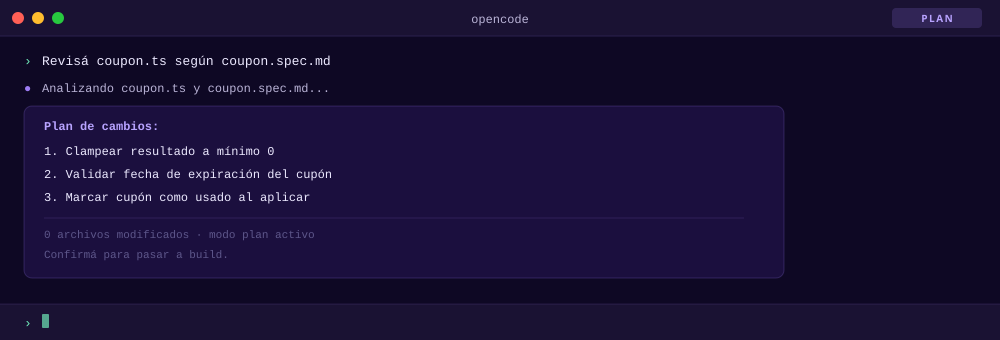
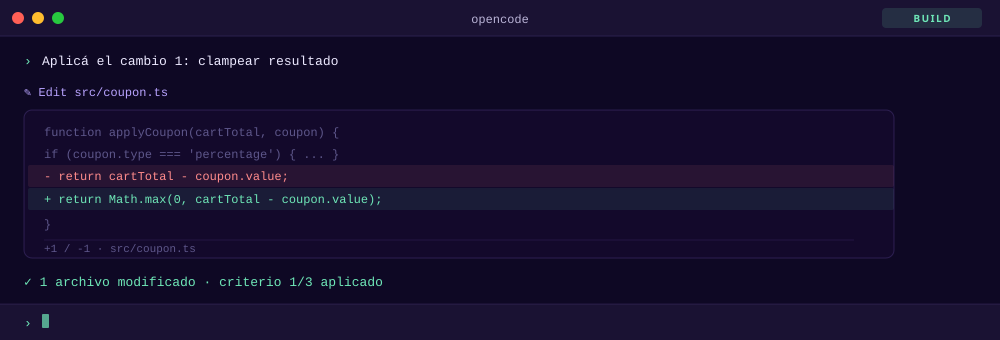
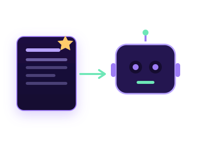

De Vibe Coding a Spec-Driven Development
Jonathan Velazquez
FLISoL CABA — 2026
"There's a new kind of coding I call "vibe coding", when you fully give in to the vibes, embrace exponentials, and forget that code even exists."
Ventajas y Desventajas
El valor aparece cuando querés explorar rápido. El costo aparece cuando el prototipo empieza a pedir garantías.
Riesgo invisible
Decisiones sin registro, código que no entendés y ningún contrato claro contra el cual verificar lo generado.
El prompt de un martes a las 17hs
Hacelo simple, después lo refino.
Lo que el agente devuelve
Tres maneras de romperlo
Total negativo
Cupón inmortal
Reaplicación infinita
El agente no falló: faltaba el contrato
Total mínimo, vencimiento y acumulación no son bugs. Son reglas que nunca existieron para verificar.
El contrato es un archivo Markdown
La spec no vive en el chat: queda versionada, revisable y ejecutable como referencia para el agente.
Un archivo .md alcanza para convertir intención en reglas verificables.
El agente deja de adivinar y empieza a implementar contra un contrato concreto.
"Many people have tried to come up with a better name for this to differentiate it from vibe coding, personally my current favorite agentic engineering"
Entonces.. La velocidad aumentó; el problema ahora es el control.
Desarrollar contra una especificación
SDD es usar una spec como contrato verificable: define qué debe pasar, qué límites existen y cómo saber si el resultado está bien.
- Antes: intención, comportamiento y alcance.
- Durante: el agente implementa guiado por la spec.
- Después: se verifica contra criterios explícitos.
La IA implementa contra el contrato
El resultado ya no es el happy path: el código refleja reglas, errores y bordes definidos en la spec.
Espectro de estructura
No hay uno correcto, depende del contexto
Vibe Coding
Velocidad máxima para probar ideas, demos y descartables.
Control mínimoPlan → Build
Separás pensamiento de ejecución. Buen balance para trabajo individual.
Control operativoPlan → Build + SDD
La implementación queda guiada por specs, criterios y verificación.
Control trazableOpenCode
Agente de terminal · open source · multimodelo
- Corre en la terminal: lee archivos, edita código y ejecuta comandos
- Soporta Claude, GPT-4o, Gemini y más — vos elegís el modelo
- Entiende contexto del proyecto: specs, reglas y convenciones
- Pensado para trabajar sobre código real, no desde cero
# Implementar según spec: coupon.spec.md › Aplicá los criterios definidos en la spec Leyendo coupon.spec.md... encontré 3 criterios de aceptación. Voy a aplicar el primero: el resultado nunca puede ser negativo. Edit src/coupon.ts function applyCoupon(cartTotal, coupon) { - return cartTotal - coupon.value; + return Math.max(0, cartTotal - coupon.value); } ✓ Criterio satisfecho: total nunca negativo. › █
Modo Plan y Build
Separar el pensamiento de la ejecución
Analizar sin tocar código
Lee el proyecto, responde preguntas y arma un plan — sin modificar ningún archivo hasta que vos lo decidás.
Ejecutar cambios reales
Tiene acceso a todas las herramientas: edita archivos, ejecuta comandos y aplica los cambios de principio a fin.


OpenSpec
Acordá qué vas a construir antes de escribir una sola línea de código.
- Agree before you build: humano y agente alinean el alcance antes de tocar código
- Convierte la intención en artefactos trazables, no en prompts sueltos que se pierden
- Specs en markdown: una fuente de verdad versionada, auditable y que vive con el repo
$ openspec view OpenSpec Dashboard ──────────────────────────────────── Summary • Specifications: 10 specs, 64 requirements • Active Changes: 3 in progress • Completed Changes: 4 • Task Progress: 30/41 (73% complete) Active Changes ● make-validation-scope-aware [░░░░░░] 0% ● remove-diff-command [█████░] 90% ● improve-deterministic-tests [█████░] 92% Completed Changes ✓ add-slash-command-support ✓ sort-active-changes-by-progress ✓ update-agent-file-name ✓ update-agent-instructions Specifications ■ cli-archive 10 requirements ■ openspec-conventions 10 requirements ■ cli-validate 9 requirements ■ cli-list 7 requirements ■ cli-view 7 requirements
OpenSpec
Qué lo hace práctico para Spec-Driven Development en el día a día
Todo es markdown
Specs versionadas con Git, agnósticas de cualquier agente.
Deltas revisables
Cada cambio se revisa y aprueba como un PR antes del código.

Contexto del agente
Las specs guían al agente y quedan como fuente de verdad.
Implementar SDD con OpenSpec
Del requerimiento al historial auditable, paso a paso
-
1
Inicializar
Estructura openspec/ y deja las instrucciones del agente dentro del repo.
openspec init -
2
Proponer el cambio
El agente redacta proposal, specs (deltas), design y tasks.
openspec proposal -
3
Validar y revisar
Aprobás el qué contra la spec antes de escribir una línea de código.
openspec validate -
4
Implementar por tareas
El agente ejecuta tareas chicas y revisables, marcando el progreso.
tasks.md -
5
Archivar
El delta se integra a las specs principales y queda historial auditable.
openspec archive
SDD busca trazabilidad y precisión al construir con IA
El plan se vuelve tasks.md
Ejemplo: aplicar un cupón de descuento al carrito
# Aplicar cupón de descuento 2 / 6 tareas · 33% completo ## 1. Clampear el resultado a 0 ✓ 1.1 Devolver Math.max(0, cartTotal − coupon.value) ✓ 1.2 Test: un descuento mayor al total no da negativo ## 2. Validar la expiración del cupón ☐ 2.1 Rechazar cupones con expiresAt < hoy ☐ 2.2 Test: un cupón vencido lanza error ## 3. Marcar el cupón como usado ☐ 3.1 Setear coupon.usedAt al aplicarlo ☐ 3.2 Impedir reutilizar un cupón ya usado
OpenCode + OpenSpec
OpenCode
Planifica y ejecuta los cambios con cualquier modelo.
OpenSpec
Estructura el cambio en specs trazables antes del código.
Desarrollo profesional
Velocidad de la IA con rigor de ingeniería.
De la vibe a la spec
Dejá que la IA vaya rápido. La spec marca el rumbo y deja rastro.